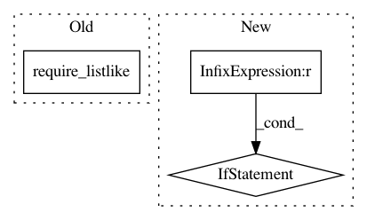

7e37c0a65c8daf9ff5a7b3b4ef6213d0c50fa31a,tmtoolkit/preprocess/_tmpreproc.py,TMPreproc,__init__,#TMPreproc#Any#Any#Any#Any#Any#Any#Any#Any#,67
Before Change
% (self.language, stopwords_pickle))
self.stopwords = []
else: // set passed stopword list
require_listlike(stopwords)
self.stopwords = stopwords
if punctuation is None: // load default punctuation list
self.punctuation = list(string.punctuation)
After Change
if stopwords is None: // load default stopword list for this language
self.stopwords = load_stopwords(self.language)
if self.stopwords is None:
logger.warning("could not load stopword list for language "%s"" % self.language)
if punctuation is None: // load default punctuation list
self.punctuation = list(string.punctuation)
else:
require_listlike(punctuation)
In pattern: SUPERPATTERN
Frequency: 3
Non-data size: 3
Instances
Project Name: WZBSocialScienceCenter/tmtoolkit
Commit Name: 7e37c0a65c8daf9ff5a7b3b4ef6213d0c50fa31a
Time: 2020-01-28
Author: markus.konrad@wzb.eu
File Name: tmtoolkit/preprocess/_tmpreproc.py
Class Name: TMPreproc
Method Name: __init__
Project Name: WZBSocialScienceCenter/tmtoolkit
Commit Name: 371aec51da35bee35f5f00737243bfe1cf13991a
Time: 2020-02-26
Author: markus.konrad@wzb.eu
File Name: tmtoolkit/preprocess/_common.py
Class Name:
Method Name: expand_compounds
Project Name: WZBSocialScienceCenter/tmtoolkit
Commit Name: 371aec51da35bee35f5f00737243bfe1cf13991a
Time: 2020-02-26
Author: markus.konrad@wzb.eu
File Name: tmtoolkit/preprocess/_common.py
Class Name:
Method Name: glue_tokens